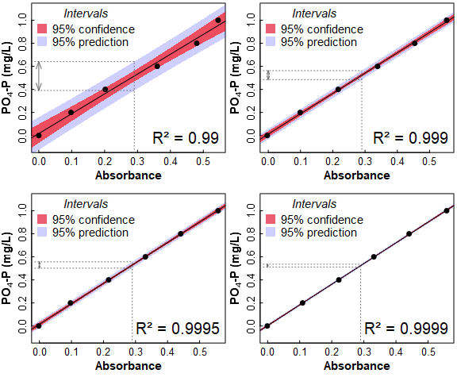

Material to support teaching in Environmental Science
Material to support teaching in Environmental Science
at The University of Western Australia
Units ENVT3361, ENVT4461, and ENVT5503
Statistical Relationships
Simple linear regression
Andrew Rate
2024-06-19
Relationships pages: Correlations | Simple linear regression | Grouped linear regression | Multiple linear regression
Using the R code file provided and the afs1923
dataset:
- Run a simple regression model,
- Assess whether or not a regression model meets the statistical assumptions,
- Try the additional suggestions at the end of the R code file, and
- Make sure you understand the concepts for all the statistical methods you use, and can interpret all the output!
If you need to install packages like car,
lmtest, and effects this should be done first,
either:
- from the RStudio packages tab;
- running some code like the example below for each package you need
to install.
install.packages("psych")
Regression and correlation are often considered together, but they are not the same thing. Correlation measures the strength and direction of a relationship between two variables. Regression is a model in which the variance in one variable (the "dependent" variable) is explained by one, or a combination of, predictor variables (also called "independent" variables). We will cover only linear regression, where the dependent variable is a linear function of the predictor variable(s).
Our usual first step is to read the data, and change anything we need to:
git <- "https://github.com/Ratey-AtUWA/Learn-R/raw/main/"
afs1923 <- read.csv(paste0(git,"afs1923.csv"), stringsAsFactors = TRUE)
afs1923$Type <- factor(afs1923$Type, levels=c("Drain_Sed","Lake_Sed","Saltmarsh","Other"))
afs1923$Type2 <-
factor(afs1923$Type2,
levels=c("Drain_Sed","Lake_Sed","Saltmarsh W","Saltmarsh E","Other"))Using the afs1923 dataset, we will make a simple
linear regression model predicting chromium from aluminium.
Before we investigate a regression model, we inspect the scatterplot (Figure 1).
par(mfrow=c(1,1), mar=c(3,3,1,1), mgp=c(1.5,0.5,0), oma=c(0,0,0,0), tcl=0.2,
cex=1.2, cex.lab=1.1, cex.axis=1., lend="square", ljoin="mitre", font.lab=2)
with(afs1923, plot(Cr ~ Al, data = afs1923, type="n",
xlab = "Al (mg/kg)", ylab = "Cr (mg/kg)"))
grid(col="grey", lty=3)
afs1923$Al.log <- log10(afs1923$Al)
afs1923$Cr.log <- log10(afs1923$Cr)
with(afs1923, points(Cr ~ Al, data = afs1923, pch=c(21:25)[Type2],
bg = plasma(nlevels(afs1923$Type2))[Type2],
xlab = "Al (mg/kg)", ylab = "Cr (mg/kg)"))
abline(lm(Cr ~ Al, data=afs1923), lwd=3, col="#80808080")
legend("bottomright", legend=levels(afs1923$Type2), box.col="grey", cex=0.85,
inset=0.01, pt.bg=plasma(nlevels(afs1923$Type2)), pch=c(21:25),
title=expression(bold("Sample type")))Figure 1: Scatterplot showing relationship between Cr and Al at Ashfield Flats Reserve in 2019-2023. Observations and regression lines are separated by sample Type.
We show the Sample type to confirm that all types follow approximately the same relationship – remember checking relationships for correlation in a previous session?
Creating a simple regression model is straightforward in
R. We use the lm() function to create a
linear model object (give it a memorable name), with the model defined
by a formula using the tilde ~ operator which most often
means ‘depends on%rsquo;. In our example we have:
-Cr ~ Al which, in context, means
Cr as a linear function of Al - The
dependent variable is Cr which is conventionally
plotted on the \(y\)-axis - The
independent variable or predictor is Al
which is conventionally plotted on the \(x\)-axis
We then run a summary() of the model object, as this
gives the most informative output:
##
## Call:
## lm(formula = Cr ~ Al, data = afs1923)
##
## Residuals:
## Min 1Q Median 3Q Max
## -40.751 -5.349 -0.251 5.774 52.250
##
## Coefficients:
## Estimate Std. Error t value Pr(>|t|)
## (Intercept) 7.672e+00 1.284e+00 5.976 5.89e-09 ***
## Al 1.359e-03 3.829e-05 35.480 < 2e-16 ***
## ---
## Signif. codes: 0 '***' 0.001 '**' 0.01 '*' 0.05 '.' 0.1 ' ' 1
##
## Residual standard error: 9.428 on 333 degrees of freedom
## Multiple R-squared: 0.7908, Adjusted R-squared: 0.7902
## F-statistic: 1259 on 1 and 333 DF, p-value: < 2.2e-16The output from a linear model summary in R is quite extensive:
Call: gives the model we specified (for checking)Residuals: some summary statistics for the difference of the model from the measured values – these differences are called the residualsCoefficients: a table showing the parameters of the line of best fit, shown by the estimates. The intercept of the line is in the first row, and the slope labelled by the predictor variable. The other columns in the sub-table give the uncertainty in the parameters (Std.Error), and the null hypothesis p-value (Pr(>|t|)) based on a t-statistic for each parameter (against H0 that there is no effect of a predictor, i.e. the slope = 0)Signif. codes: just explains the asterisks *** or ** or *- The last block of text contains information on how well the model
fits the data. We will focus on the R2 (R-squared) value,
which is equivalent to the proportion of variance in the dependent
variable (
Crin this example) which is explained by the predictor (Alin this example). We should also note the overall p-value, based on the variance ratio F-statistic, which tests H0 = no effect of any predictor.
Requirements and Assumptions of [linear] regression
Ideally, any regression model that we create should fulfil certain assumptions. There are four main assumptions based on the residuals of the regression model. The residuals are the differences between the model and reality (e.g. for simple linear regression, the residuals are the the vertical distances between the line of best fit and the actual points).
Figure 2: Example of simple linear regression with residuals represented
by vertical lines showing the deviations of observations from the
regression model relationship. Data are from Ashfield Flats sediments
2019-2023, resticted to sample Type == Other.
The assumptions of linear regression are:
- Linear relationship: There is a linear relationship between the independent variable, x, and the dependent variable, y.
- Independence: The residuals are independent. In particular, there is no correlation between consecutive residuals in time series data (i.e. no autocorrelation).
- Homoscedasticity: The residuals have constant variance at every level of x.
- Normality: The residuals of the model are normally distributed.
We can check these assumptions graphically using diagnostic plots (see below), or using formal statistical tests, which we do after the diagnostic plots.
Diagnostic plots for Simple linear regression, Cr ~ Al
Figure 3: Regression diagnostic plots for Cr predicted from Al using a simple linear regression model without grouping
The diagnostic plots (Figure 3) are a visual test of some of the
assumptions of linear regression models, which relate mainly to the
residuals.
[An alternative from the car package is
influenceIndexPlot(yourModelName)].
The top left and bottom left plots in Figure 3 allow us to assess the assumption of homoscedasticity, that is, the residuals should be of similar absolute magnitude independent of the value of the dependent variable (actual or predicted). The top left plot also helps us to decide if the residuals are independent. In both the top left and bottom left plots, residuals should appear randomly distributed with a near-horizontal smoothed (red) line.
The top right plot in Figure 3 is a Q-Q plot which tests another assumption of regression; that the residuals should be normally distributed. The points should lie along (or close to) the theoretical (dotted) line.
Finally the bottom left plot in Figure 3 tests whether any observations have an unusual influence on the regression statistics (the assumption is that they do not).
Formal statistical tests of regression assumptions
We can test all of the assumptions with formal statistical tests
using the car and lmtest R
packages.
We can use the Shapiro-Wilk test to check the assumption of normally distributed residuals (H0 is that the residuals are normally distributed):
##
## Shapiro-Wilk normality test
##
## data: lmCrAlsimple$residuals
## W = 0.96084, p-value = 8.146e-08The Breusch-Godfrey test is for residual autocorrelation; H0 is that residuals are not autocorrelated (i.e. observations probably independent)
##
## Breusch-Godfrey test for serial correlation of order up to 1
##
## data: lmCrAlsimple
## LM test = 73.543, df = 1, p-value < 2.2e-16The Breusch-Pagan test is for heteroscedasticity; H0 is that residuals are homoscedastic (i.e. variance independent of value of variable).
##
## studentized Breusch-Pagan test
##
## data: lmCrAlsimple
## BP = 0.11665, df = 1, p-value = 0.7327The Rainbow test is to test the assumption of linearity; H0 is that the relationship is linear.
##
## Rainbow test
##
## data: lmCrAlsimple
## Rain = 0.54384, df1 = 168, df2 = 165, p-value = 1The outlierTest() function in the car
package implements the Bonferroni outlier test; H0 is that
all residuals are from the same population (i.e. no outliers).
H0 is tested with the Bonferroni (NOT
unadjusted) p-value. If no Bonferroni p-value is≤ 0.05, so we cannot
reject H0, the function outputs the largest residual(s).
## rstudent unadjusted p-value Bonferroni p
## 177 5.832413 1.2965e-08 4.3433e-06
## 227 -4.451964 1.1636e-05 3.8981e-03
## 134 4.212634 3.2558e-05 1.0907e-02Another common measure of whether individual observations are influential in the regression is Cook's distance. We often use a rule-of-thumb that observations with a Cook's distance >0.5 could be considered influential.
## Min. 1st Qu. Median Mean 3rd Qu. Max.
## 0.0000000 0.0002053 0.0008548 0.0035295 0.0026661 0.1354693Even more detail can be obtained using the function
influence.measures(). This produces a lot of output, so we
show only part of it here.
## Potentially influential observations of
## lm(formula = Cr ~ Al, data = afs1923) :
##
## dfb.1_ dfb.Al dffit cov.r cook.d hat
## 2 0.00 0.06 0.14 0.98_* 0.01 0.00
## 134 0.53 -0.48 0.53_* 0.92_* 0.14 0.02
## 137 0.04 -0.04 0.04 1.02_* 0.00 0.01
## 138 -0.07 0.00 -0.17 0.96_* 0.01 0.00
## 168 -0.03 0.02 -0.03 1.02_* 0.00 0.01
## 177 0.49 -0.40 0.51_* 0.83_* 0.12 0.01
## 222 -0.10 0.09 -0.10 1.02_* 0.01 0.02
## 223 -0.10 0.09 -0.10 1.02_* 0.01 0.02
## 226 -0.10 0.05 -0.14 0.97_* 0.01 0.00
## 227 0.04 -0.15 -0.28_* 0.90_* 0.04 0.00
## 245 0.33 -0.44 -0.47_* 0.97_* 0.11 0.02_*
## 247 0.18 -0.24 -0.27_* 1.00 0.04 0.02
## 267 0.15 -0.22 -0.25_* 0.99 0.03 0.01
## 290 -0.10 0.09 -0.10 1.02_* 0.00 0.02
## 291 -0.10 0.10 -0.10 1.02_* 0.01 0.02_*
## 296 -0.07 0.06 -0.07 1.02_* 0.00 0.02
## 320 -0.03 0.03 -0.03 1.02_* 0.00 0.02To summarise:
Test | Assessing | Results |
Shapiro-Wilk | Are residuals normally distributed? | No (qq-plot suggests long tails) |
Breusch-Godfrey | Are residuals independent? | No, there is autocorrelation |
Breusch-Pagan | Are residuals homoscedastic? | Yes (p<0.05) |
Rainbow | Is the relationship linear? | Yes (p<0.05) |
Outlier | Are there significant outliers (Bonferroni)? | 3 points are possible outliers |
Cook's Distance | Are there any potentially influential observations? | No (no values > 0.5) |
Infuence Measures | Are there any potentially influential observations? | Yes (17 out of 335 observations) |
The summary of the diagnostic tests in Table 1 shows that not all the formal assumptions of regression are fulfilled by our model. While this means the model may not be perfectly valid from a statistical perspective, we also recall that the regression output showed that nearly 80% of the variance in Cr could be explained by Al. So, from a practical perspective, our simple regression model could still be used for prediction.
We can show the regression model relationship with two types of interval: a confidence interval, and a prediction interval:
Figure 4: Simple linear regression relationship bewteen Cr and Al, showing 95% confidence and prediction intervals. Data are from Ashfield Flats sediments 2019-2023.
The intervals in Figure 4 are noticeably different, with the confidence interval much narrower than the comparable prediction interval. The key differences are that:
- the confidence interval shows the range of mean Cr for any given value of Al that would be expected 95% of the time
- the prediction interval shows the range of Cr values that a single additional sample could take, for different values of Al
The prediction interval, then, is the one we need to consider when predicting an unknown concentration of Cr from a known concentration of Al in sediment. In this example, with R2 nearly 0.8, we may not have expected such a large prediction uncertainty – but it's good to be aware of the practical limitations of regression modelling.
A very practical application of regression prediction is when using calibration curves in different types of sample analysis. The plots in Figure 5 show why your lab instructor nags you to take care with your measurements when preparing standards and samples, and demands that your calibration has R² close to 0.9999!

Figure 5: Calibration curves for filterable reactive phosphate of different quality and having different R² values. The dotted lines show interpolation of the calibration lines at Absorbance = 0.29, and the resulting range of prediction intervals.
Subsequent sessions will cover grouped and multiple regression. These methods may make prediction more accurate by:
- allowing regression relationships to differ for different groups in our data (defined by a factor variable) – regression by groups, or
- testing a model which has more than one predictor variable for our dependent variable – multiple regression.
References
Fox, J. and Weisberg, S. (2019). An R
Companion to Applied Regression, Third Edition. Thousand Oaks
CA: Sage. https://socialsciences.mcmaster.ca/jfox/Books/Companion/
(R packages car and
effects)
Garnier S, Ross N, Rudis R, Camargo AP, Sciaini M, Scherer C (2021).
Rvision – Colorblind-Friendly Color Maps for R. R package
version 0.6.2. (R package viridis)
Reimann, C., Filzmoser, P., Garrett, R.G., Dutter, R., (2008). Statistical Data Analysis Explained: Applied Environmental Statistics with R. John Wiley & Sons, Chichester, England (see Chapter 16).
Zeileis, A. and Hothorn, T. (2002). Diagnostic Checking in Regression
Relationships. R News 2(3), 7-10. https://CRAN.R-project.org/doc/Rnews/
(R package lmtest)
CC-BY-SA • All content by Ratey-AtUWA. My employer does not necessarily know about or endorse the content of this website.
Created with rmarkdown in RStudio.